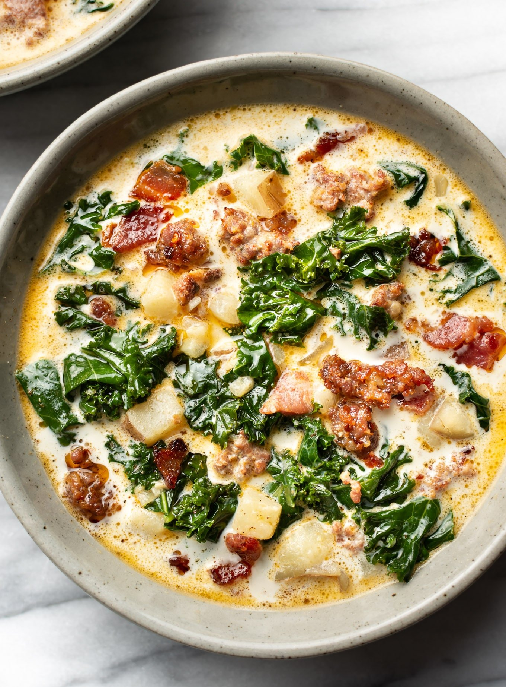

This recipe has just the right amount of spice to keep you coming back for more!
until crumbly, browned, and no longer pink, 10 to 15 minutes. Drain and set aside.
Darin, leaving a few tablespoons of drippings with the bacon in the bottom of the
Dutch oven. Stir in onions and garlic; cook until onions are soft and translucent,about 5 minutes.
Stir in chicken broth and bring to a boil over high heat. Add potatoes and simmer
until fork tender, about 20 minutes. Reduce heat to medium; stir in cream, cooked
sausage, and spinach. Cook and stir until spinach has wilted and sausage is warmed
through; serve./p>until fork tender, about 20 minutes. Reduce heat to medium; stir
in cream, cooked sausage, and spinach. Cook and stir until spinach has wilted and
sausage is warmed through; serve.